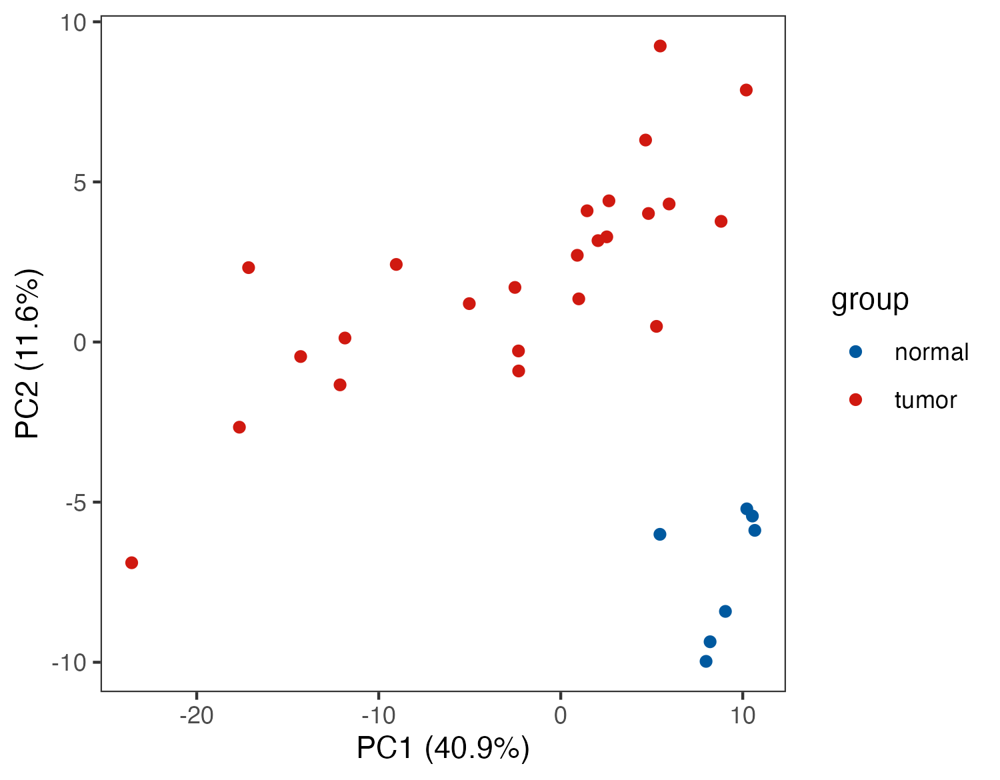
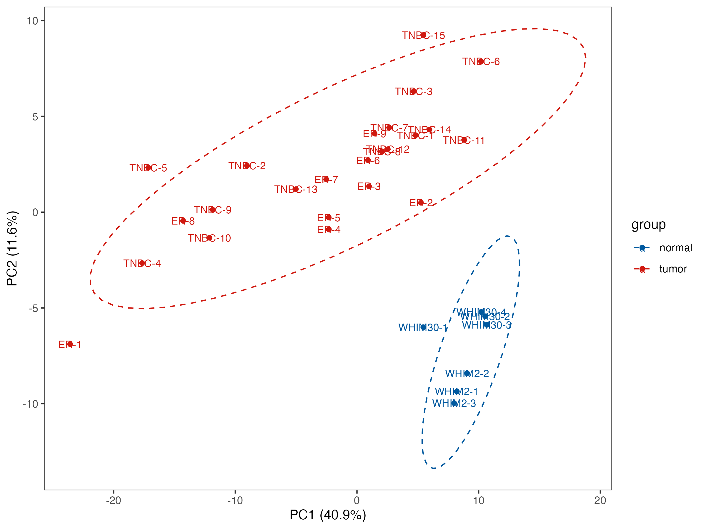
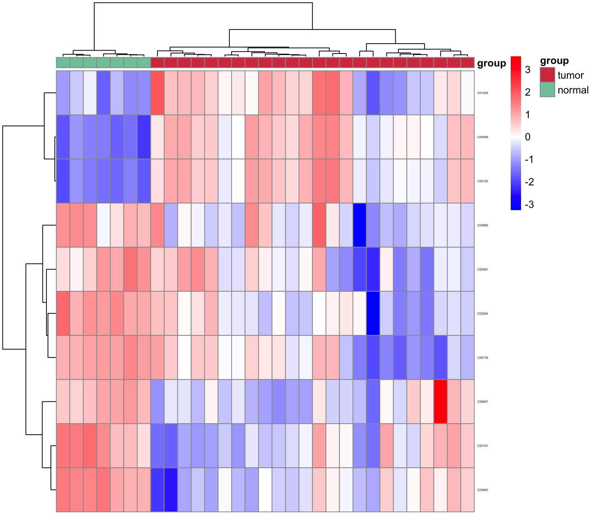

Chapter 4 差异代谢物
4.1 PCA
主成分分析(Principal Component Analysis，PCA)：是从原始变量之间的相互关系入手，根据变异最大化的原则将其线性变换到几个独立的综合指标上（即主成分），取2～3个主成分作图,直观地描述不同组别之间的代谢模式差别和聚类结果,并通过载荷图寻找对组间分类有贡献的原始变量作为生物标志物.
dir.create("result")
## 操作者需根据自己的数据更改tumor-normal组名称及对应样本数
group <- c(rep("tumor",24),rep("normal",7))
# meta_dat是 MNet R包内的一个数据框
View(meta_dat)
## 对代谢组数据根据分组进行主成分分析
p_out <- pPCA(meta_dat,group)
ggsave("result/03.PCA_p1.pdf",p_out$p1,width=5,height = 3.9)
ggsave("result/03.PCA_p2.pdf",p_out$p2,width=5,height = 3.9)
ggsave("result/03.PCA_p3.pdf",p_out$p3,width=8,height = 6)
ggsave("result/03.PCA_p1.png",p_out$p1,width=5,height = 3.9)
ggsave("result/03.PCA_p2.png",p_out$p2,width=5,height = 3.9)
ggsave("result/03.PCA_p3.png",p_out$p3,width=8,height = 6)PCA_p1 
PCA_p2

PCA_p3 
4.3 OPLS-DA
正交-偏最小二乘判别分(OPLS-DA)使用正交信号校正技术，将X矩阵信息分解成与Y相关和不相关的两类信息，然后过滤掉与分类无关的信息，相关的信息主要集中在第一个预测成分. 通常,根据 VIP(Variable Importance for the Projection)值来说明变量(特征峰)能解释X数据集和关联Y数据集的重要性.所有VIP值的平方之和与模型中的变量总数相等,因此,其平均值为1.当某个变量的VIP>1时，说明该变量是重要的，通常将此作为潜在生物标记物对筛选条件之一.
4.4 可视化
4.4.1 Heatmap
result_mlimma_filter <- result_mlimma_all %>%
dplyr::filter(abs(logFC) > 1) %>%
dplyr::filter(`adj.P.Val` < 0.05)
dat_filter <- meta_dat %>%
tibble::rownames_to_column(var="label") %>%
dplyr::filter(label %in% result_mlimma_filter$name) %>%
tibble::column_to_rownames("label") %>%
head(n=10)
pdf("result/03.p_heatmap.pdf",width=5,height = 5)
p_heatmap <- MNet::pHeatmap(dat_filter,group,clustering_distance_cols ="manhattan",
clustering_method="ward.D",fontsize_row=3)
dev.off()
png("result/03.p_heatmap.png", width = 8, height = 7, units = 'in', res = 200 )
p_heatmap <- MNet::pHeatmap(dat_filter,group,clustering_distance_cols ="manhattan",
clustering_method="ward.D",fontsize_row=3)
dev.off()p_heatmap 